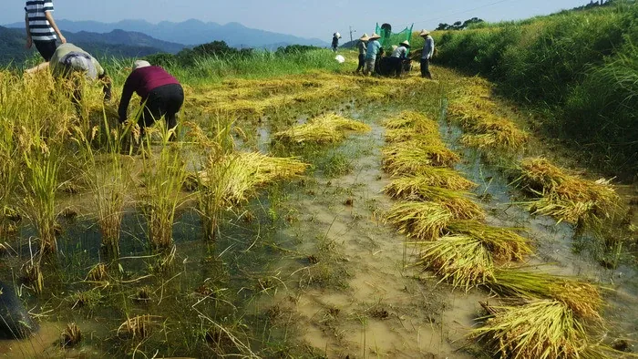
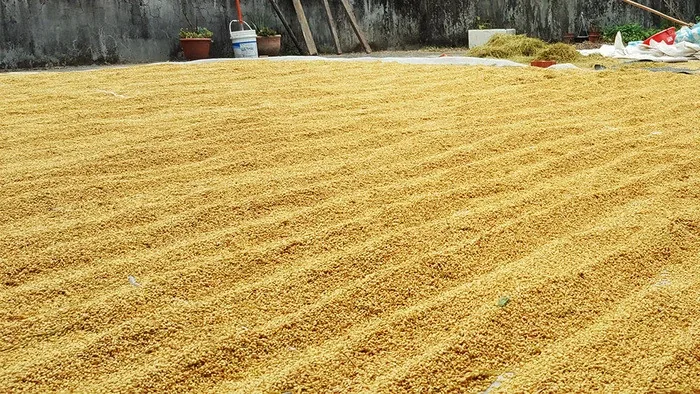
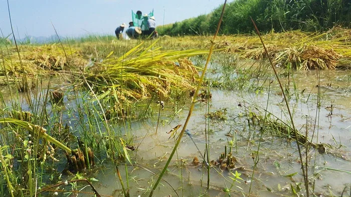

[日常] 2018年田間記事 - 割稻
第二年，本來七月中小腿抽筋痛了好幾天未好，以為自己今年要錯過了割稻的機會，結果是太天真了。今年還去了兩次。
因為抽筋失去了鬥志，直到被詢問有沒有空去幫忙，和L不約而同地答應，提前一天住在那裡，也就一起前往。
這次乘車買了對號車票，像個傻子一樣戳戳點點了購票機五分鐘，幸好我沒有放棄、也沒有排隊人潮催促我，才知道「福隆站」放在「東部」的類別裡。我想我們需要更人性化的機器。（L表示：怎麼沒有語音辨識例如：「S_ri，我要去福隆！」）
不再數算到站燈號、或睡或發呆，而是和L進行了各種工作閒聊以及我懷疑人生的開導，夜晚話匣子未停的精神力，我想，割稻雖然是勞力活，我們心理上還是將他歸類於「假期」。
到了站，慢半拍的廣播（明明已經進站、看見月台了，廣播還只是提醒般的內容：「福隆站要到了～」）、擺放神秘位置的飲水機，搭上K第一次開這段山路的車，好像把我們帶往另一個時空去。對於割稻、對於貢寮，雖然是一年前的事，知道該帶什麼裝備、做哪些準備，還是充滿期待。（不過還是有東西忘了帶XD）
遇到了有著十八般武藝的當地人朋友，吃了幾種不同蜜源的蜂蜜，很是奇妙， 可惜我嘴拙、味覺想像力不豐，吃得出差異但說不出來。
住所外門大敞，我們讓夜晚的生物肆意進出（小客廳裡可以數到4隻大蝗蟲），在木地板席地而坐，有酒和洋芋片，聽K分析L和我的人類圖，部分相同反映著為什麼我們容易產生共鳴、輕易理解彼此，我常常覺得能夠相遇，是很幸運的事。
當天下午，L來電：「需要自己帶睡袋嗎？」
我不知道。我想是不需要，但我記不得去年我有沒有蓋被子。而我沒記得的不只是有沒有蓋被子而已，還有我睡得一點也不好，這次也一樣。被各樣聲音吵得睡不著。
清晨的時候，大家從睡夢中醒來，安靜不相打擾地做著各自的準備，讓我想到《神隱少女》裡頭宛如開自動導航的半透明黑色鬼魂。（這種連配角都稱不上的角色應該沒人記得）
這次主要不是幫忙割稻，而是拾起一把把割下的稻子傳給打穀的人。當然也有割稻、幫忙將稻穀裝袋、嘗試打穀……一整條生產線（？）都嘗試過才知道，每一個步驟都有他的眉角。割稻很療癒，不用管別人自己安靜地割就好，但是割下的一把把稻子要怎麼擺才能讓後面的人好撿又是一回事；傳遞稻子怎麼給最好取、最快、最有效率呢？打穀的工作我沒嘗試太多便換下來，怕拖了團隊的效率XD……總之要用大拇指與手掌壓緊稻子，跟機器桶的距離也要拿捏好……。將打下來的穀裝袋也需要規劃一個SOP，不然會時刻被噴下來的稻草給干擾。

割下的稻被美麗地擺放。這就是工作的藝術啊～
太陽極曬，豆大的汗讓眉毛失去功能，數次流進眼睛。（沒錯，本次忘了帶頭巾……）
這次都只工作半天，而約莫九點半左右會有一次中場休息時間，青草茶、石花凍、酸梅汁……冰涼的甜品在豔陽下真的可以將人帶入天堂。（到底為什麼可以這麼豐盛！衷心感謝好貼心的狸老闆）
而最感動的畫面，或許是沿著稻與雜草間的長長田埂走，生物們感受到動靜，紛紛竄出，像走在迪士尼動畫中的紅地毯上，而他們列隊歡呼，無不使盡全力歡迎我的的到來。（…太美好的想像。或許對他們來說，更像是使徒襲來……或是進擊的巨人之類的。）
工作半天，也就說，我們將稻穀扛上小貨車，和他們兜上一段風，穿過山間的林蔭，一起偷看到山羌棕色的美背（用一種偷看仙女洗澡的興奮心情，而且還要到處炫耀「我看到了！」），然後在農家卸貨，透過篩穀機篩選出閃耀著完美金黃色的稻穀，接著讓他們舒服地在陽光下躺好，想伸懶腰的時候，我們會過去幫他們翻身，服務做到一百分（單押X1）。用光裸的腳掌貼著地緩慢前進，像企鵝走路一般，讓他們反覆形成溝壑，他們像活潑好動的小孩，連睡覺都要時不時變換睡姿，而我們，對他們也要有足夠的溫柔。

這是自己收的稻榖喔喔喔喔～成就感爆棚
終於安頓下來，才輪到我們可以打理自己，洗乾淨然後上桌吃飯！（一句話完結）
兩次割稻間隔約十天，而第二次的時候，居然就吃到了第一次割的稻米！有什麼比可以吃到自己割的稻還要感動的事！結果吃到一半開始下起雨，大夥兒趕緊跑到外頭，幾個有經驗的農人看著天空的雲討論著該如何做，在一旁看著跟著覺得十分感動（又是說不上來的那種），或許是他們在專業上認真的模樣，以及能夠看天看雲推測天氣的崇拜吧。
有什麼是必須急切放下碗筷先處理的呢？仔細一想，好像很久沒有經驗到在乎一件事情到這種程度了，那也反映著與天地共存的生活方式啊！

割稻的蹂躪，也阻止不了的無限生機
吃飽喝足後，是最讓人想逃避的洗衣服地獄……！不停地搓洗也永遠會跑出泥巴水，一邊沒耐性地碎嘴又只能安分地洗著，最後好像放棄事事都要做到完美一樣（或發現事情永遠不可能完美XD），擰乾、曬在圍牆上。反正最後，殘存的泥巴會在再次穿上褲子的時候，捏起褲子一角用力一彈，化作土色煙霧。
莫名其妙地收尾XD
本次照片感謝Y完全提供！（我這次一張也沒拍啊啊啊）
（2019年3月部落格搬家，重新上稿文章，發現這篇也太叨叨絮絮了吧XD）
留言
電子郵件不會公開，只用來辨識留言者。第一次留言會先經過審核，之後同一個電子郵件的留言會直接顯示。本留言區以 Cloudflare Turnstile 防止垃圾留言。